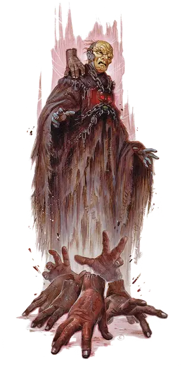

Витерс
Withers
Средняя Нежить, нейтрально-злая, именной НИП

Класс Доспеха 14 (проклепанная кожа)
Хиты 45 (6к8 + 18)
Скорость 30 футов
| мод | спас | ||
|---|---|---|---|
| СИЛ | 15 | +2 | +2 |
| ЛОВ | 14 | +2 | +2 |
| ТЕЛ | 16 | +3 | +3 |
| мод | спас | ||
|---|---|---|---|
| ИНТ | 16 | +3 | +3 |
| МДР | 13 | +1 | +1 |
| ХАР | 15 | +2 | +2 |
Навыки Восприятие +3, Скрытность +4
Сопротивление урону некротическая энергия; дробящий, колющий, рубящий от немагических атак, кроме нанесённых посеребрённым оружием
Иммунитет к урону яд
Иммунитет к состояниям отравление, истощение
Чувства тёмное зрение 60 футов, пассивное Восприятие 13
Языки все, известные при жизни
Опасность 4 (1100 опыта)
Бонус мастерства +2
Среда обитания Болото, Город, Подземье, Пустыня
Особенности
Чувствительность к солнечному свету. Находясь на солнечном свету, умертвие совершает с помехой броски атаки, а также проверки Мудрости (Восприятие), полагающиеся на зрение.
Магический амулет. Он носит амулет чёрного черепа [amulet of the Black Skull], который имеет 6 зарядов.
Использование заклинаний. Витерс является заклинателем 9-го уровня. Его базовой характеристикой является Интеллект (Сл спасброска от заклинания 13, +5 к попаданию атаками заклинаниями). У него подготовлены следующие заклинания волшебника:
• Заговоры (неограниченно): брызги кислоты [acid splash], волшебная рука [mage hand], малая иллюзия [minor illusion], фокусы [prestidigitation];
• 1 уровень (4 ячейки): обнаружение магии [detect magic], поспешное отступление [expeditious retreat], падение пёрышком [feather fall], волна грома [thunderwave];
• 2 уровень (3 ячейки): тьма [darkness], удержание личности [hold person], трюк с веревкой [rope trick];
• 3 уровень (3 ячейки): рассеивание магии [dispel magic], молния [lightning bolt];
• 4 уровень (3 ячейки): усыхание [blight], огненная стена [wall of fire];
• 5 уровень (1 ячейка): телекинез [telekinesis].
Действия
Мультиатака. Умертвие совершает две атаки длинным мечом или длинным луком. Оно может использовать Вытягивание жизни вместо одной атаки длинным мечом.
Вытягивание жизни. Рукопашная атака оружием: +4 к попаданию, досягаемость 5 футов, одно существо. Попадание: Урон некротической энергией 5 (1к6 + 2). Цель должна преуспеть в спасброске Телосложения Сл 13, иначе максимум её хитов уменьшится на количество, равное полученному урону. Это уменьшение длится до тех пор, пока цель не окончит продолжительный отдых. Цель умирает, если этот эффект уменьшает максимум хитов до 0.
Гуманоид, убитый этой атакой, восстает через 24 часа в качестве зомби под контролем умертвия, если этого гуманоида не воскресят, или его тело не уничтожат. У умертвия может быть не более двенадцати зомби под контролем одновременно.
Длинный меч. Рукопашная атака оружием: +4 к попаданию, досягаемость 5 футов, одна цель. Попадание: Рубящий урон 6 (1к8 + 2), или рубящий урон 7 (1к10 + 2), если используется двумя руками.